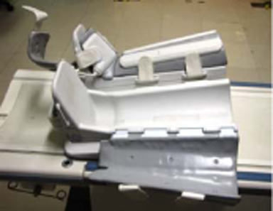
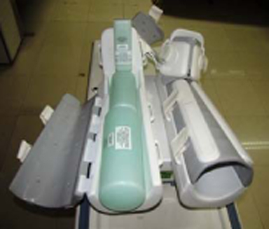
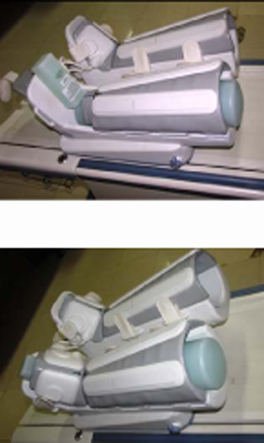
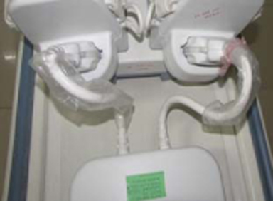
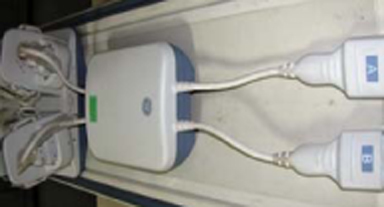
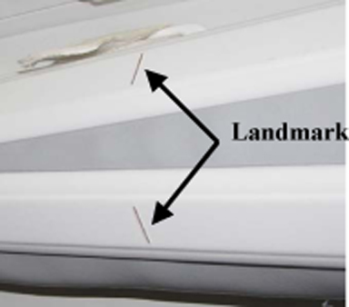
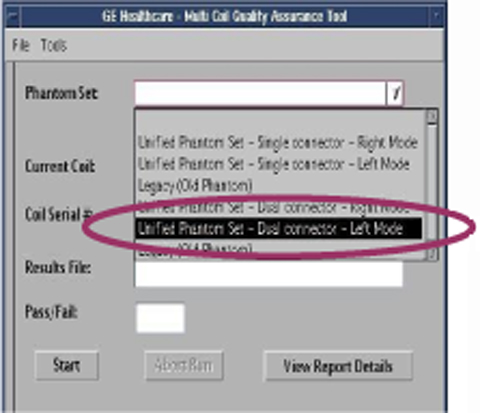
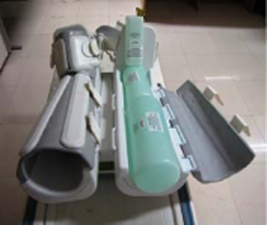
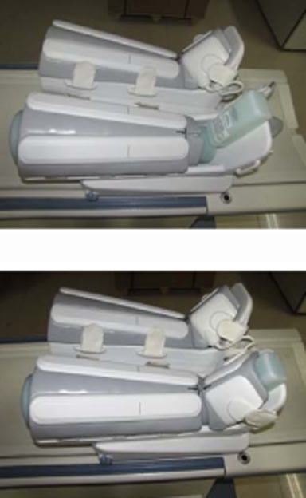
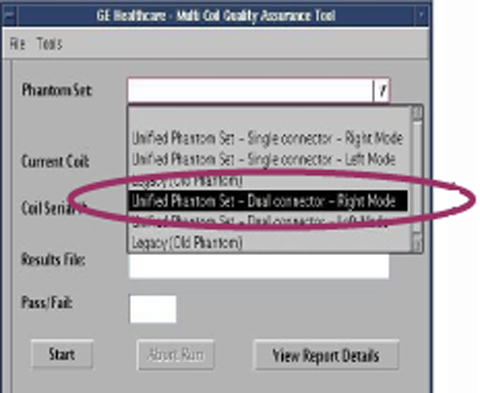

Operating Documentation
Direction 5500113, Rev# 3
Discovery MR450 1.5T Service Methods
Module Version 3.0, Version Date 11/23/09
Operating Documentation |
| Required Persons | Preliminary Reqs | Procedure | Finalization |
|---|---|---|---|
| 1 | Not Applicable | 15 mins | Not Applicable |
Follow this process to prepare for the automated SNR test using the 1.5T HD Lower Leg Coil by GE/USAI (M3087JH) .
| NOTE: | Coils do not ship with phantoms. Phantoms come in a unified phantom set with the MR system. |
| Item | Qty | Effectivity | Part# | Manufacturer | |
|---|---|---|---|---|---|
| Legacy Phantom Kit (consists of qty. 2 of p/n 150535) | 1 | Legacy Phantom Kit | 2414905 | - | |
| Small Cylindrical Unified Phantom | 1 | Unified Phantom Kit | 5342680 | - | |
| Cubical Unified Phantom | 1 | Unified Phantom Kit | 5342681 | - | |
| Large Cylindrical Unified Phantom | 1 | Unified Phantom Kit | 5342679 | - | |
| Condition | Reference | Effectivity |
|---|---|---|
The following coil configuration names must be installed to run this tool: HD LowerLeg_serv, HD_LowerLegLserv, and HD_LowerLegRserv. | - | - |
Position the base in the cradle, connect the preamp box to the cables and system, and position the leg segments on the base as shown in Illustration 1.
Illustration 1: Positioning the Coil Base

Place a phantom in each leg segment as shown in Illustration 2.
Illustration 2: Positioning Phantoms

Secure the anterior leg and foot coils over the phantoms and advance coil towards the bore. See Illustration 3.
Illustration 3: Securing Coils over Phantoms

Landmark on the coil crosshairs as shown in Illustration 4.
Illustration 4: Landmarking Coil

Perform the Multi-Coil Quality Assurance (MCQA) Test.
Perform the Surface Coils SNR Test
Place the base of the coil on the patient table and position the left leg segments on the base as shown in Illustration 5.
Illustration 5: Positioning the Coil Base

Place the small cylindrical unified phantom in the left leg portion of the coil as shown in Illustration 6.
Illustration 6: Positioning the Cylindrical Unified Phantom

Place the large cylindrical unified phantom in the left leg portion of the coil as shown in Illustration 7.
Illustration 7: Positioning the Large Cylindrical Unified Phantom

Place the cubicle unified phantom in the foot part of the left leg portion of the coil as shown in Illustration 8.
Illustration 8: Positioning the Cubical Unified Phantom

Cover the phantoms with the anterior portion of the coil, as shown in Illustration 9, using the straps provided.
Illustration 9: Securing the Phantoms

Connect both the cables of the preamp box to the coil, as shown in Illustration 10, and then connect the cables of preamp box to port A and port B of the system LPCA as shown in Illustration 11.
Illustration 10: Connecting Cables to Coil

Illustration 11: Connecting Cables to Ports

Connect the coil to the respective port of system LPCA.
Landmark the coil on the marks provided, as shown in Illustration 12, and press [advance to scan].
Illustration 12: Landmarking the Coil

Perform the Multi-Coil Quality Assurance (MCQA) Test with the Unified Phantom Set.
For Lower Leg Array left mode, the following phantom sets are listed from the dropdown menu as shown in Illustration 13.
Illustration 13: Dropdown Menu Phantom Sets

Select Unified Phantom Set – Dual connector – Left Mode from the dropdown menu.
Proceed with the test.
Place the base of the coil on the patient table and position the left leg segments on the base as shown in Illustration 14.
Illustration 14: Positioning the Coil Base

Place the small cylindrical unified phantom in the right leg portion of the coil as shown in Illustration 15.
Illustration 15: Positioning the Small Cylindrical Unified Phantom

Place the cubicle unified phantom in the foot part of the left leg portion of the coil as shown in Illustration 16.
Illustration 16: Positioning the Cubicle Unified Phantom

Cover the phantoms with the anterior portion of the coil, as shown in Illustration 17, using the straps provided.
Illustration 17: Securing the Phantoms

While covering the foot part, make sure that the arrow marks are aligned with each other as shown in Illustration 18.
Illustration 18: Aligning the Arrows

Connect both the cables of the preamp box to the coil, as shown in Illustration 19, and then connect the cables of preamp box to port A and port B of the system LPCA as shown in Illustration 20.
Illustration 19: Connecting Cables to Coil
Illustration 20: Connecting Cables to Ports
Connect the coil to the respective ports of system LPCA.
Landmark the coil on the marks provided, as shown in Illustration 21, and press [advance to scan].
Illustration 21: Landmarking the Coil
Perform the Multi-Coil Quality Assurance (MCQA) Test with the Unified Phantom Set.
For Lower Leg Array Right mode, the following phantom sets are listed from the dropdown menu as shown in Illustration 22.
Illustration 22: Dropdown Menu Phantom Sets

Select Unified Phantom Set – Dual connector – Right Mode from the dropdown menu.
Proceed with the test.
No finalization steps.